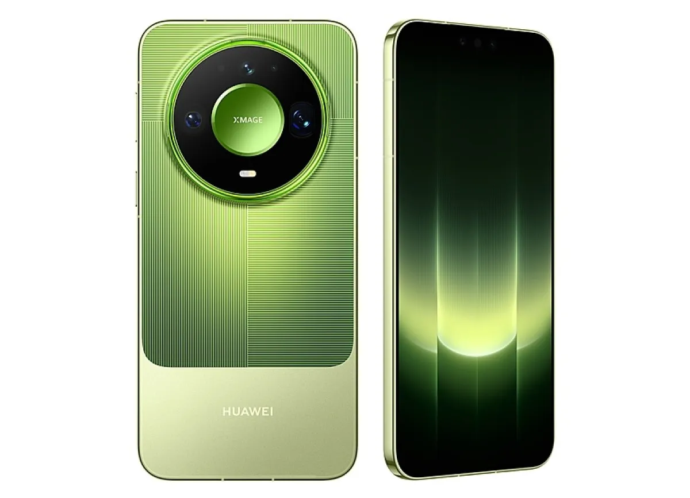
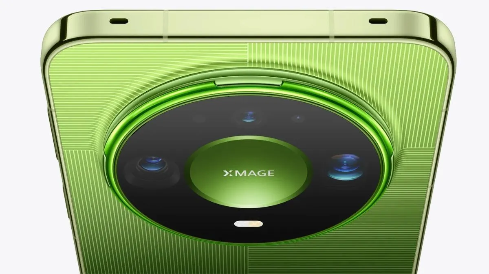
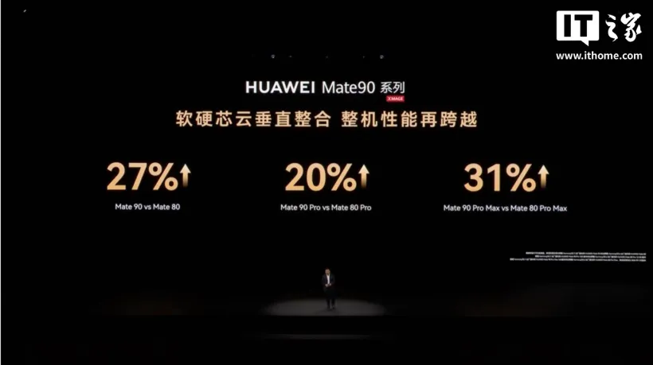
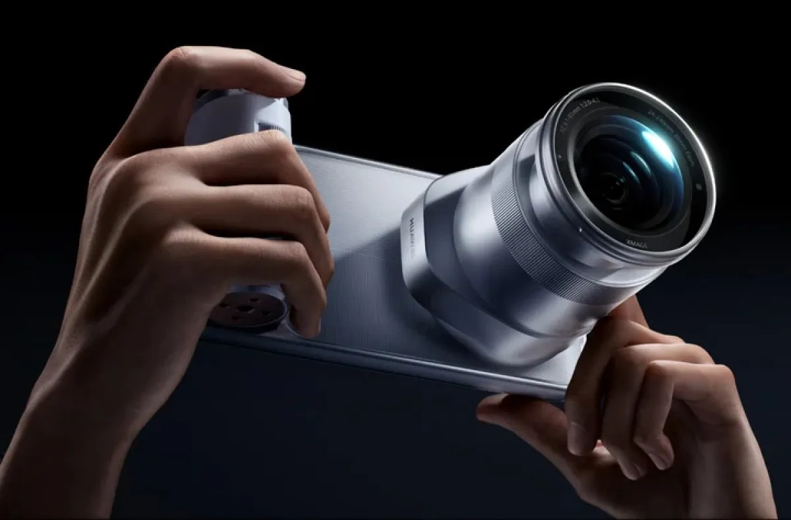
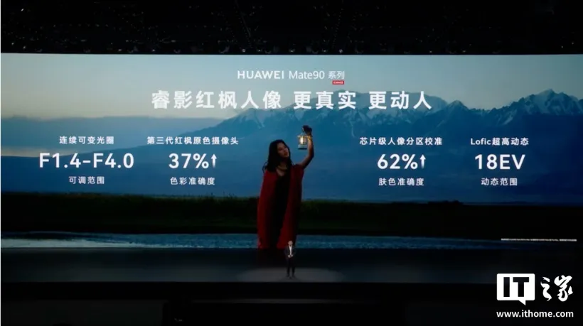
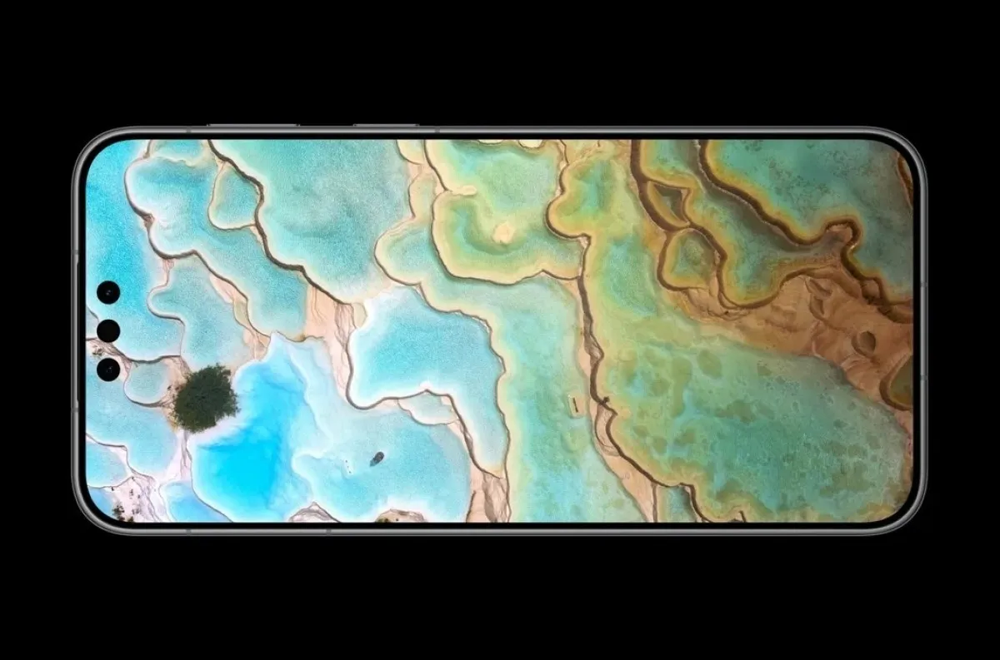
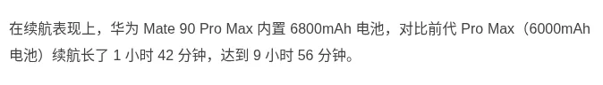
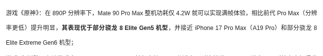

تقنية6 دقائق
هواوي Mate 90 Pro Max: ما تقوله الاختبارات الأولى عن البطارية والحرارة وKirin 9050 Pro، ولماذا لم يعد اسم "Pro Max" يعني الأفضل في كل شيء؟
مقدمة
يتصدر Mate 90 Pro Max سلسلة Mate 90 التي أُطلقت في الصين يوم 1 أكتوبر 2026، ويستثنى من ذلك إصدار الهواة (典藏版) وإصدار RS. ولم تعلن هواوي حتى اليوم (20 أكتوبر 2026) عن طرحه خارج الصين.
هذا الطراز هو الأكثر حضوراً في الاختبارات الصينية حتى الآن، لذلك تتوفر عنه بيانات أكثر من بقية طرازات السلسلة. ومع ذلك، فإن كثيراً من هذه البيانات منقول عن مصادر ثانوية، وننبّه إلى ذلك في كل موضع.

المواصفات الأساسية
| المعيار | القيمة |
|---|---|
| الشاشة | OLED مزدوجة الطبقات بمقاس 6.9 بوصة، 2848×1320، تردد LTPO من 1 إلى 120Hz، وذروة سطوع 12,000 شمعة عند 1% APL |
| المعالج | Kirin 9050 Pro في نسخة 16GB، وKirin 9050 في نسخة 12GB |
| النظام | HarmonyOS 7.0 |
| الذاكرة | 12 أو 16GB رام مع 512GB أو 1TB |
| الكاميرات الخلفية | رئيسية 50MP بفتحة متغيرة F1.4–F4.0، وتقريب 200MP بتقريب 4x مع OIS، وواسعة جداً 40MP |
| البطارية | 6800mAh |
| الشحن | 100W سلكي، و50W لاسلكي، و18W عكسي سلكي |
| الوزن | نحو 234 غراماً |
| الحماية | IP68 وIP69 |
| السعر في الصين | ¥9,499 لنسخة 12+512، و¥9,999 لنسخة 16+512. إصدار الهواة بسعر ¥10,999 أو ¥12,999 |
مطابقة السعر: سعر ¥9,499 لنسخة 12+512 مطابق لدليل الشراء الرسمي ولموقع GSMArena.
لكن انتبه: هذه النسخة الأساسية تعمل بمعالج Kirin 9050 وليس 9050 Pro، بحسب صفحة المواصفات الرسمية وGSMArena. وذكرت Straits Times أن سعر نسخة 16+512 أعلى بمقدار ¥2,000 من السعر الذي أُطلق به الجيل السابق.

تقييمات المُلّاك (Coolapk)
لم نجد تقييماً رقمياً منشوراً من مُلّاك الهاتف على Coolapk. المتاح هو أن الهاتف جاء ضمن أول ثلاثة في "قائمة الرواج" على المنصة، وفق ما نقله موقع bs178. هذه القائمة تقيس حجم النقاش، ولا تقيس رضا المُلّاك.
على موقع ZOL يظهر متوسط 10.0 من 29 تقييماً. لكن الصفحة نفسها تُظهر درجات فرعية قيمتها 8 لكل من البطارية والأداء والكاميرا، وتوزيعاً يضع كل التقييمات بين 3 و4 نجوم. هذه الأرقام لا تتسق مع بعضها، والعينة صغيرة، فلا ننصح بالاعتماد عليها.
ومن مالك اشترى الهاتف بسعر ¥9,499 واستخدمه سبعة أيام (موقع NetEase):
نقطة قوته الأطول: الشاشة والاتصال وتناسق الألوان بين العدسات والبطارية. ونقطة ضعفه: الحرارة تحت الحِمل الطويل، وفيديو التقريب الليلي.
البطارية
- اختبار Geekerwan (极客湾) للبطارية في سيناريو 5G: 9 ساعات و56 دقيقة. نقلت الرقم Sina وsmzdm، ولم نصل إلى الفيديو الأصلي.
- اختبار بث مباشر لتصفح Douyin متواصلاً: 16 ساعة و32 دقيقة حتى نسبة 1%، ثم 28 دقيقة في وضع الطوارئ. هذا اختبار فردي من مدوّن.
- استخدام متوسط إلى مرتفع ليوم كامل: تبقّى نحو 30% في تجربة على Sohu، وبين 25 و35% في تجربة على smzdm.
- ملاحة متواصلة لمسافة نحو 400 كم مع تشغيل الموسيقى: استهلكت قرابة 50% من البطارية، بحسب Sohu.
بالمقارنة، سعة البطارية (6800mAh) أصغر من منافسين مثل Honor Magic 9 Pro Max (8800mAh) وXiaomi 18 Pro Max (8500mAh)، بحسب smzdm.
الشحن: ذكرت تجربة smzdm أن الشحن السلكي بقدرة 100W رفع البطارية من 14% إلى 69% خلال نحو نصف ساعة، ووصفته بأنه "كافٍ لكنه ليس الأسرع".
الأداء والحرارة
في اختبار Geekerwan للعبة Genshin Impact بدقة 890P، بلغ متوسط استهلاك الطاقة 4.2W للهاتف كاملاً.
تعارض في الأرقام: نقلت Sina متوسط 59.9 إطاراً، بينما نقلت smzdm متوسط 59.2 إطاراً للاختبار نفسه.
وفي لعبة Wuthering Waves بلغ المتوسط 50 إطاراً مع استهلاك 6.3W، بحسب المصدرين.
الحرارة: بعد 60 دقيقة من Genshin Impact، عند حرارة غرفة 25 درجة وسطوع 350 شمعة، بلغت حرارة الظهر نحو 41 إلى 42 درجة مئوية، بحسب تقرير مجمّع على Sina لا يذكر جهة الاختبار بوضوح.
أما المُلّاك فتحدثوا عن شيئين:
- بعد اللعب من 40 دقيقة إلى ساعتين أو ثلاث، يخفض النظام جودة الرسوميات، ويصبح الدفء في الظهر واضحاً ومستمراً.
- ظهرت شكاوى على Xiaohongshu من سخونة إصدار RS، وتلاها تحديث للنظام يوم 14 أكتوبر، بحسب smzdm.
لم نعثر على نتائج WHYLAB منشورة لهذا الهاتف.

الكاميرا
أهم تغيير في الكاميرا هذا الجيل هو عدسة التقريب بدقة 200MP. ويذكر GSMArena أن مستشعري الكاميرا الرئيسية والتقريب بحجم 1/1.28 بوصة، لكن صفحة هواوي الرسمية لا تذكر هذا المقاس.
يدعم إصدار الهواة وحدة الكاميرا الخارجية Z10، وهي بمستشعر 1 بوصة ومدى بُعد بؤري من 24 إلى 240 ملم. تُباع منفصلة بسعر ¥5,999، أو ضمن طقم بسعر ¥19,499.
تعارض في الألوان: يقول GSMArena إن إصدار الهواة متاح باللون الأخضر فقط، بينما يدرج دليل الشراء الرسمي أربعة ألوان.


ماذا قالت التجارب الفعلية؟
- مقارنة مع iPhone 16 Pro على Sohu: نسبة اللقطات الصالحة كانت أعلى في التصوير القريب وفي التصوير الليلي للأجسام المتحركة. لكن الكاتب نفسه يرفض وصف الكاميرا بأنها "متفوقة على كل المستويات".
- مالك على NetEase: فيديو التقريب الليلي فيه تشويش واضح.
الشاشة
يصف المُلّاك في Sohu وNetEase وsmzdm الشاشة بأنها واضحة في الخارج تحت الشمس، وأنها تحافظ على سطوعها أثناء الملاحة الطويلة.
لم نجد قياساً مخبرياً مستقلاً للسطوع، ورقم 12,000 شمعة مقاس عند 1% APL فقط.

البرمجيات والاتصال
يعمل الهاتف بنظام HarmonyOS 7 دون أندرويد.
- ذكرت تجربة smzdm أن بعض نتائج الذكاء الاصطناعي على الجهاز في التحديث الأول كانت غير دقيقة.
- رصدت Sohu مرة واحدة خللاً في تحديد الموقع عند الخروج من نفق، ولم يتكرر.
- أُشيد بالاتصال في الأماكن ذات الإشارة الضعيفة.
- نبّهت Sohu إلى أن نسخة 16+512 لا تضمن بالضرورة كل ميزات الاتصال عبر الأقمار الصناعية.
تقييمات المصادر الصينية
| المصدر | ما اختبره | النتيجة | الرابط |
|---|---|---|---|
| Geekerwan 极客湾 (عبر ITHome) | الكفاءة والألعاب والبطارية | Genshin بدقة 890P: إطارات كاملة بقدرة 4.2 واط للجهاز. البطارية (نموذج 5.0): 9 ساعات و56 دقيقة، أي أطول بساعة و42 دقيقة من الجيل السابق. | الرابط |
| مقال تجميعي على Sina (ينسب الأرقام إلى Geekerwan) | الألعاب والحرارة | Genshin: 59.9 إطارًا بقدرة 4.2 واط. Wuthering Waves: نحو 50 إطارًا بقدرة 6.3 واط. Neverness to Everness: نحو 53 إطارًا بقدرة 6.8 واط. حرارة خلفية نحو 41-42 درجة بعد 60 دقيقة Genshin (مصدر الحرارة غير مسمى). | الرابط |
| Coolapk 酷安 | تقييم الملّاك | الأرقام في قسم تقييم الملّاك أعلاه. موقع Coolapk محجوب، ولم نجد ناقلًا موثقًا يعرض أرقام هذا الهاتف. | - |
| WHYLAB 微机分، ZOL 中关村在线، CNMO 手机中国، PConline، Zealer، IT168، Sina Tech | - | لم يُختبر بعد. لم نعثر على اختبار منشور. | - |
تتفق المصادر على تحسن كبير في الكفاءة مقارنة بالجيل السابق، مع Genshin بإطارات كاملة عند 4.2 واط تقريبًا. لا يوجد خلاف رقمي واضح لأن معظم الأرقام تعود إلى اختبار Geekerwan نفسه، أما أرقام الحرارة في المقال التجميعي فغير منسوبة.
آخر تحديث للتقييمات: 22 أكتوبر 2026


نقاط القوة والضعف
- إيجابي: بطارية ممتازة نسبة إلى سعتها، وكفاءة جيدة في الألعاب، وشاشة ساطعة، واتصال قوي، وعدسة تقريب 200MP.
- سلبي: وزن 234 غراماً، وشحن ليس الأسرع، وتراجع الأداء تحت الحِمل الطويل.
- سلبي: نسخة 12GB تعمل بمعالج 9050 وليس 9050 Pro، وتقسيم النسخ يربك المشتري.
نصائح للمشترين في الخليج
النقاط التالية نصائح عامة:
- إذا كنت تريد معالج Kirin 9050 Pro فتأكد من شراء نسخة 16GB، فهو غير موجود في نسخة 12GB.
- لا توجد خدمات Google.
- تحقق من النطاقات الترددية لدى مشغّلك.
- الضمان المحلي غير مضمون للأجهزة المستوردة.
- ميزات Beidou محصورة في البر الصيني.
- حرارة الصيف في الخليج قد تجعل تراجع الأداء تحت الحِمل يظهر أبكر. هذا استنتاج عام، ولم نجد اختباراً له في ظروف الخليج.
الخلاصة
يقدّم Mate 90 Pro Max أفضل ما في السلسلة من حيث البطارية والكفاءة والكاميرا. لكن سعره ارتفع، واختيار النسخة المناسبة يحتاج إلى انتباه.
الهاتف نفسه رائد، لكن اسم "Pro Max" وحده لم يعد يضمن لك المواصفات الأعلى.
#midroid5G #HUAWEI